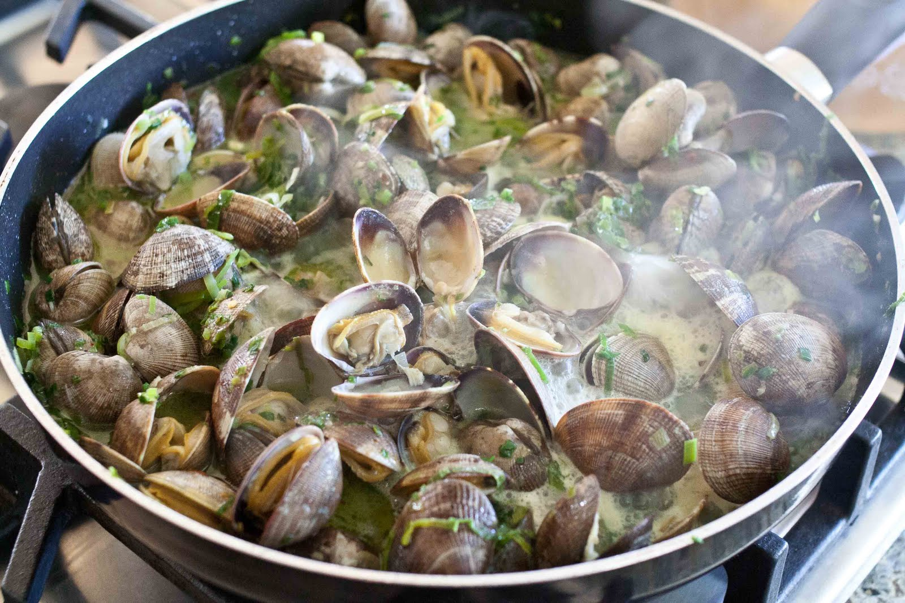

Step 3: Put 4 generous lugs of extra virgin olive oil into the hot pan and add the garlic, parsley stalks and a good pinch of salt and pepper. Crumble in the dried chilli and add the chopped tomatoes. Stir everything around constantly and just as the garlic starts to colour, tip in the clams and pour in the wine. It will splutter and steam, so give everything a good shake and put the lid on the pan. After about 3 or 4 minutes the clams will start to open, so keep shuffling the pan around until all of them have opened. Take the pan off the heat. Get rid of any clams that haven't opened.
